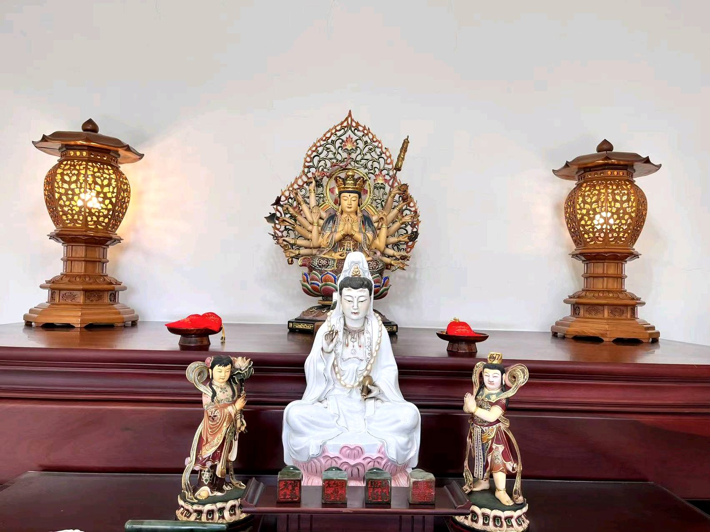

網站快速入口
從這裡可以快速找到你需要的方向：認識緣起、了解聖業、線上共參，或隨喜護持。
浩德堂的緣起
起於一段真實的因緣，也續於二十六年的日常修持。
民國九十年，於普陀山梵音洞因緣之下，與師父結下深深法緣。所尊奉的師父，是千手千眼觀世音菩薩，並以最恭敬的心，尊稱為準提佛母。
觀看完整緣起
以修持安住其心，以善念利益其人
修行不是離開生活，而是在生活中守住內心的恭敬、善念與清明。
持誦
日日不斷的提醒，讓心不離願，不離恭敬。
靜坐
讓內心回到清明安定，在紛亂中安住。
靜修
在生活裡守住修持，讓心念與行動慢慢整齊。
修己渡人
浩德堂始終不變的方向，是先修己，再利益他人。
浩德堂所尊奉的，不只是修持的形式，更是一種提醒：在忙碌世間裡，仍然要守住內心的善、恭敬與清明。
太素觀 ｜ 共參聖業現況
太素觀不只是一處建設中的道場，也是由願心、善念、修持與共參所共同成就的聖業。
浩德堂緣起 ｜ 二十六年的修持因緣
一段已經走了二十六年的修持因緣
浩德堂，不是一個突然出現的名字，而是從梵音洞的一次感應開始，慢慢走到今日，也成為一條讓人可以安住身心、持續走下去的修持之路。
修行不是離開生活，而是在生活裡把心安住，把人做好，把善念落實。浩德堂所希望承接的，不只是一份宗教形式，而是一條讓敬心、善念與願心都有處可回的路。
民國九十年，因緣具足，前往大陸普陀山參香。於梵音洞這個地方，感受到一股很深的攝受與指引。對當事人而言，那是一份真實而清楚的感應，也是在那個因緣之下，與師父結下了深深的法緣。
所尊奉的師父，是千手千眼觀世音菩薩，並以最恭敬的心，尊稱為準提佛母。自那次回來之後，便開始供奉師父法相，尊奉師父聖示，走修己渡人、利益眾生的公事之路。
二十六年來，浩德堂並不是只存在於名稱上的地方，而是一份真實持續的修持與實踐。每天清晨持誦、靜坐、靜修，尊奉師父聖示，修己渡人，盡一份利他的心，做一份利益眾生的公事。
也因此，浩德堂一路走來，不只是個人的修持之所，也慢慢成為一些有因緣的人，可以前來禮敬、共參、交流善念的地方。
以最恭敬的心，尊稱為準提佛母。
這份法緣，並不是抽象的概念，而是一份長年供奉、日常修持、真實依止的承接。法相所代表的，不只是外在形貌，而是一份提醒：在紛擾忙碌的世間裡，仍要守住恭敬、清明與善念。
因此，浩德堂一路走來，始終以敬心為本，以修持為根，也希望讓有緣之人來到這裡時，不只是看見一處佛堂，而是感受到一份安定與可依止的力量。
持誦、靜坐、靜修，並尊奉師父聖示，走修己渡人、利益眾生的公事之路。
持誦
讓心日日有提醒，不離願、不離恭敬。
靜坐
在紛雜之中，讓心回到安定與清明。
靜修
不是離開生活，而是在生活裡守住修持。
修己渡人
先修己，再利益他人，這是浩德堂始終不變的方向。
若你與浩德堂有緣，願你在此得一份清淨、安定與善念的連結。
花蓮壽豐 ｜ 浩德堂共參聖業
太素觀
太素觀目前暫時收起共參；浩德堂植福田與相關修持仍持續運作，歡迎以福田方式持續同行。
太素觀是什麼
緣起與願心
太素觀不是一般建設案，而是一份修持、發心與共願的延續。太素觀不只是未來的一個建築完成體，而是一處希望能真正承接禮敬、共參、安住身心與共同發願的地方。
它與浩德堂的方向是同一條線，利益眾生。也因此，太素觀的意義，不在於外在規模而已，而在於這份願心能否一步一步落實，讓有緣之人有一處可回來的道場。
目前進度
土地規劃、實體建築結構體完成，且目前鷹架已拆除，可見外觀現況。
以現況整理、後續工程與空間整備規劃為主，讓道場一步一步更加完整穩定。
持續推進外部工程、室內工程、水電與基礎設備、空間整理與周邊環境整備。
未來希望承接的方向
修持之所
作為日常修持、安住身心與發願共修的承接之處。
禮敬之所
讓有緣之人能夠懷著恭敬心前來禮敬、共參。
共願之所
讓一份護持、一份發心，不停留在口頭，而能一步一步落實為共同成就的聖業。
連結善念
與浩德堂的方式，先與這份願心連結，再一步一步參與其中。
願太素觀未來成為一處讓有緣之人能夠禮敬、共修、安住善念、共同成就聖業的地方；也讓每一份真誠發心，都能在清楚、穩定而可承接的方式中，慢慢被落實下來。
方便法門入口 ｜ 虛擬浩德堂
線上共參
即使身在遠方，也仍可誠心禮敬、共修、發願與迴向。虛擬浩德堂所希望提供的，不是取代實體修持，而是一條現代人可行的方便法門。
目前可承接的共參方向
線上禮敬
讓有緣之人即使無法常回佛堂，也能保有一份誠心禮敬的入口。
共修通知
承接固定共修、節日安排與重要共參資訊的通知入口。
祈福登記
可為自己、家人與有緣人登記祈福與善願，作為後續承接依據。
功德迴向
讓一份善念與發心，有一個清楚、安定、可迴向的方向。
如何進行
- 先了解浩德堂先理解這份緣起、修持方向與目前的運作方式，讓共參建立在清楚與恭敬之上。
- 選擇共參方向依自身因緣與發心，選擇線上禮敬、共修通知、祈福登記或功德迴向等不同入口。
- 留下必要資訊浩德堂僅收取承接所需的必要資料，不過度蒐集，並以恭敬、清楚、保密為原則。
- 由浩德堂後續承接包括共修通知、祈福安排、迴向說明，以及後續若有新活動或建設進度更新，也可持續連結回來。
注意事項
以恭敬與清楚為本
所有線上共參內容，都應以恭敬心、真誠發心與清楚說明為本，不走誇大、不走交換式話術。
不過度蒐集個資
若未來有祈福、迴向或通知表單，只收取必要資料，並講明用途，不任意公開。
與實體修持相互承接
虛擬浩德堂不是替代實體道場，而是讓現代人多一條可以回來的方便法門。
線上共參，不是把修持變得輕率，也不是把敬心變成形式；而是讓忙碌世間中的有緣之人，仍然能保有一條回來的路。
植福田與供養登記入口
隨喜護持 ｜ 共植福田
浩德堂植福田持續運作，歡迎以福田方式同行；發心清楚，方向自然安定。
植福田 / 供養登記
可一次勾選多項（例如供花 + 供果），金額會自動加總；只需留下稱呼與聯絡方式即可登記，送出後由浩德堂後續承接。
共植福田 ｜ 以恭敬心為本
共植福田不是交易，也不是把善念做成交換；而是一份願意共成聖業的發心。
如何承接
- 先看清楚方向目前承接的是浩德堂植福田（禮敬上香、供花、供果、供燈）。
- 確認項目與單位供花、供果、供燈各 500 元；禮敬上香為隨喜。
- 以清楚方式留下資料後續只收承接需要的基本資料，恭敬、清楚、保密為原則。
- 後續持續連結共修通知、祈福安排與迴向說明都可再回到網站與後續入口持續連結。
持續更新 ｜ 持續保持連結
最新消息
這裡持續更新浩德堂的共修公告與節日祈福安排，讓有緣之人能持續回來，與我們保持一份安定而真實的連結。
消息列表
我們持續更新以下內容，與有緣之人保持連結。
願有緣之人，都能在持續更新之中，與浩德堂保持一份安定而真實的連結。
浩德堂 ｜ 聯絡與承接入口
聯絡 / 承接
歡迎以下列方式與浩德堂聯絡，我們會盡快回應你的來信與疑問。
聯絡方式
掃描進入浩德堂網站
用手機相機掃描下方 QR Code，即可直接進入浩德堂網站首頁；也可下載圖檔分享給親友，或印在文宣、名片上。
{kind=link}
感謝您的發心
護持登記
願這份善念，成為一份安定而長遠的力量。
感謝您的護持
本次登記已送出。若您已完成付款，浩德堂會在確認款項後與您聯絡；若尚未付款，也可回到登記頁重新填寫。
繳費資訊
阿彌陀佛。願以此功德，迴向一切有緣眾生。